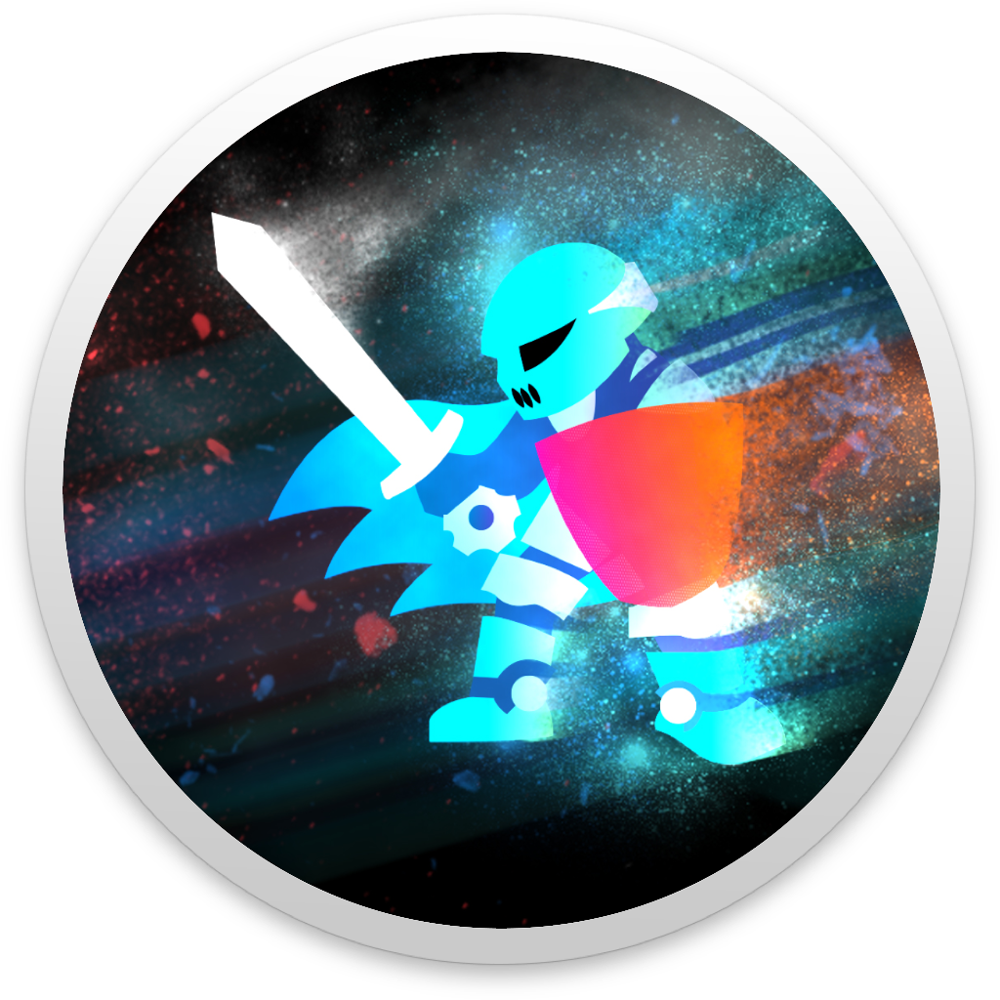

Welcome to GaelScout
Built on
Neural Networks
GaelScout uses previous records of teams and processes them
with cutting edge algorithms to make predictions. The model used for its
network runs on 3000 matches from the Turning Point
season. This makes its match prediction results
85% accurate on average—effective considering that matches do not always have systematic
outcomes.
Predicts
based on live data
When making predictions, GaelScout uses the VexDB API to
pull live data and use this data to make predictions. This
ensures utmost accuracy in prediction results.
Open Source
GaelScout is fully open source and can be found on GitHub.
This enables other teams to make use of Gael Force Robotics'
tools in competitions.